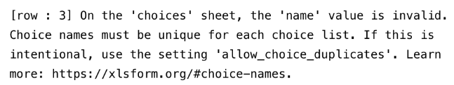
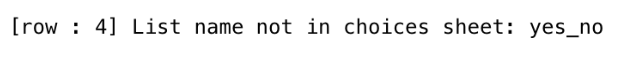

Parcourez la base de connaissances, explorez nos ressources et visitez notre Forum communautaire pour des informations plus détaillées
Dernière mise à jour : 6 mai 2026
XLSForm s’intègre parfaitement à KoboToolbox pour créer, prévisualiser, modifier et déployer des formulaires de collecte de données. Par exemple, vous pouvez commencer à créer un formulaire dans l’interface de création de formulaires KoboToolbox (KoboToolbox Formbuilder), puis le télécharger en tant que XLSForm pour le personnaliser davantage. Cela fournit une base structurée, utile pour les nouveaux projets ou les utilisateurs ayant moins d’expérience dans la création de formulaires.
Une fois personnalisés, les formulaires créés dans XLSForm peuvent être importés dans KoboToolbox pour être examinés, modifiés et déployés.
Cet article couvre les sujets suivants :
Télécharger un XLSForm depuis KoboToolbox
Importer et prévisualiser un XLSForm dans KoboToolbox
Remplacer un formulaire existant par un XLSForm
Importer un XLSForm via une URL
Tester et valider votre XLSForm
Lorsque vous travaillez dans KoboToolbox, vous pouvez avoir besoin de télécharger votre formulaire en tant que XLSForm pour y apporter des modifications plus efficacement, par exemple pour dupliquer de nombreuses questions, modifier de grandes listes d’options, ajouter des traductions ou utiliser des fonctionnalités avancées non disponibles dans le Formbuilder. De plus, télécharger votre formulaire en tant que XLSForm vous permet de créer des formulaires hors ligne, de les partager sous forme de fichiers .xlsx pour la collaboration et la gestion des versions, et de les partager avec l’équipe d’assistance de KoboToolbox ou sur le Forum communautaire pour demander de l’aide.
Tout formulaire créé avec le Formbuilder peut être téléchargé en tant que fichier XLSForm :
Accédez à la page FORMULAIRE de votre projet dans KoboToolbox.
Cliquez sur l’icône Plus d’actions.
Sélectionnez Télécharger XLS.

Vous pouvez également avoir besoin de créer un nouveau projet à partir d’un XLSForm que vous avez créé de zéro ou qui vous a été partagé.
Pour importer et prévisualiser un XLSForm dans un nouveau projet dans KoboToolbox :
Accédez à la page d’accueil Projets dans KoboToolbox et cliquez sur NOUVEAU.
Sélectionnez Importer un XLSForm et importez votre fichier Excel.
Saisissez les détails du projet et cliquez sur Créer le projet.
Cliquez sur le bouton Aperçu pour prévisualiser votre formulaire.

Une fois un projet créé, vous pouvez remplacer tout formulaire existant par un XLSForm mis à jour :
Accédez à la page FORMULAIRE de votre projet dans KoboToolbox.
Cliquez sur Remplacer le formulaire en haut à droite.
Sélectionnez Importer un XLSForm et importez votre fichier Excel.

Si vous utilisez Google Sheets ou si vous stockez le fichier dans Dropbox, vous pouvez importer un XLSForm via une URL. L’URL doit être accessible publiquement et doit déclencher le téléchargement d’un fichier lorsqu’elle est ouverte dans un navigateur pour que l’importation fonctionne. Les XLSForms peuvent également être importés depuis des logiciels similaires, tels qu’Excel Web et OneDrive.
Pour obtenir l’URL correcte d’une feuille de calcul Google Sheets :
Cliquez sur Fichier > Partager > Publier sur le Web.
Dans le menu déroulant Page Web, sélectionnez Microsoft Excel (.xlsx). Conservez Document entier sélectionné dans le premier menu déroulant.
Cliquez sur Publier.
Copiez le lien du document obtenu.
Pour plus d'informations, consultez la documentation Google Sheets.
Pour obtenir l’URL correcte d’une feuille de calcul stockée dans Dropbox :
Copiez le lien du fichier dans Dropbox en cliquant sur Copier le lien.
À la fin du lien, remplacez le suffixe dl=0 par dl=1. Il s’agira de l’URL à importer dans KoboToolbox.
Une fois que vous avez récupéré l’URL du fichier, vous pouvez importer votre XLSForm dans KoboToolbox :
Accédez à la page d’accueil Projets dans KoboToolbox et cliquez sur NOUVEAU.
Sélectionnez Importer un XLSForm via une URL.
Collez votre URL et cliquez sur Importer.
Saisissez les détails du projet et cliquez sur Créer le projet.

Note : Les modifications apportées à un fichier dans Dropbox ou Google Sheets ne sont pas automatiquement répercutées dans KoboToolbox. Vous devez réimporter le XLSForm via l'URL et redéployer les modifications du formulaire.
Valider, prévisualiser et tester votre XLSForm est essentiel pour garantir son intégrité structurelle, sa fonctionnalité et l’expérience utilisateur. Chacune de ces étapes permet d’identifier les erreurs ou problèmes susceptibles d’empêcher le formulaire de fonctionner comme prévu.
Étape |
Description |
|---|---|
Validation |
Cette étape consiste à importer le formulaire et à vérifier les erreurs (par exemple, fautes d’orthographe ou de casse, expressions de logique de formulaire incorrectes, référencement de questions incorrect, libellés manquants). Les messages d’erreur du formulaire apparaissent généralement lors de l’importation, du déploiement ou de l’ouverture d’un formulaire. |
Prévisualisation |
Cette étape vous permet de visualiser le formulaire tel qu’il sera affiché aux répondants et de vérifier que tous les éléments fonctionnent correctement avant le déploiement (par exemple, la mise en page du formulaire, les libellés des questions et des choix). |
Test |
Cette étape consiste à saisir des données pour tester le fonctionnement du formulaire (par exemple, vérifier les apparences des questions, les options de choix et la logique de formulaire). Les tests peuvent être effectués en mode APERÇU avant le déploiement. |
Valider et tester continuellement votre XLSForm au fur et à mesure des modifications simplifiera la résolution de problèmes et aidera à identifier la cause de tout problème. Il est essentiel de s’assurer que votre formulaire fonctionne comme prévu avant de lancer la collecte de données.
Lors de la prévisualisation et du test de votre formulaire, utilisez la même plateforme que celle que vous utiliserez pour la collecte de données : formulaires web, KoboCollect, ou les deux.
Pour en savoir plus sur la configuration de KoboCollect pour prévisualiser et tester vos formulaires, consultez l'article Configurer l'application KoboCollect.
Si vous avez du mal à trouver la source d’une erreur dans votre XLSForm, essayez d’importer le formulaire dans XLSForm Online par ODK, qui peut souvent fournir des messages d’erreur et des avertissements plus détaillés pour vous aider à identifier et corriger les problèmes avant d’importer le formulaire dans KoboToolbox.
Si votre XLSForm contient une erreur, un message d’erreur s’affiche, indiquant généralement la ligne, la question ou l’expression exacte où se trouve le problème. Après avoir corrigé l’erreur dans votre tableur, vous devrez importer à nouveau le fichier.
Messages d’erreur courants |
Explication courante |
|---|---|
|
Des en-têtes de colonnes obligatoires sont manquants ou mal orthographiés. |
|
L’une des questions de votre formulaire ne possède pas de libellé. |
|
Une expression de logique de formulaire contient des erreurs, telles qu’une syntaxe de référencement de questions incorrecte ou une parenthèse manquante. |
|
Une expression de logique de formulaire contient des erreurs, telles qu’une syntaxe de référencement de questions incorrecte ou une parenthèse manquante. |
|
Vous faites référence à une question de votre formulaire qui n’existe pas ou dont le nom est mal orthographié. Assurez-vous d’utiliser le nom exact de la question dans vos expressions de logique de formulaire. |
|
La liste d’options d’une question n’a pas été définie, ou il y a une faute de frappe dans le |
|
Des noms de choix en double ont été utilisés dans la même liste d’options. Supprimez le ou les noms de choix en double, ou autorisez les doublons dans les paramètres de formulaires. |
|
Un groupe de questions ne possède pas la ligne |
|
Une pièce jointe externe liée à votre formulaire (par exemple, lors de l’utilisation de |
|
Les liaisons dynamiques de projets n’ont pas été correctement configurées dans les paramètres de votre projet. |
|
Un nom de liste est manquant dans la colonne |

Cette erreur signifie qu’au moins deux lignes de la même liste de choix partagent la même valeur dans le champ name.
Par exemple :
list_name |
name |
label |
|---|---|---|
yn |
yes |
Yes, always |
yn |
yes |
Yes, sometimes |
yn |
no |
No, never |
choices |
Pour corriger les noms de choix en double :
Ouvrez votre XLSForm.
Accédez à l”onglet choices.
Trouvez le numéro de ligne référencé dans le message d’erreur.
Vérifiez la colonne name pour repérer les valeurs en double au sein du même list_name.
Mettez à jour la valeur name en double afin que chaque name de la liste soit unique.
Enregistrez le fichier, puis importez et redéployez à nouveau le formulaire.
Si les valeurs name en double sont intentionnelles (par exemple, lors de l’utilisation de filtres de choix), vous pouvez autoriser les doublons dans les paramètres de formulaires.

Cette erreur se produit lorsqu’une question utilise une liste d’options qui n’existe pas dans l”onglet choices, ou lorsque le nom de liste dans la colonne list_name est mal orthographié.
Par exemple :
onglet survey
type |
name |
label |
|---|---|---|
select_one yes_no |
service |
Do you like the service at the supermarket? |
survey |
onglet choices
list_name |
name |
label |
|---|---|---|
yes_n |
yes_always |
Yes, always |
yes_n |
yes_sometimes |
Yes, sometimes |
yes_n |
no |
No, never |
choices |
Pour corriger le nom de liste manquant ou incorrect :
survey.select_one yes_no).choices et vérifiez dans la colonne list_name qu'il existe une correspondance exacte avec le nom de liste référencé dans le message d'erreur.list_name est écrit exactement comme il apparaît dans l'onglet survey.survey et choices.name. Les termes réservés sont des termes qui ne peuvent pas être utilisés comme noms de questions car ils sont utilisés par le moteur XForms sous-jacent pour la structure, la logique ou l'analyse des données (par exemple, type, label, start, today). L'utilisation de ces termes peut entraîner des erreurs de validation du formulaire, des échecs de publication ou des problèmes d'export de données.Pour corriger le problème, renommez la question concernée avec une valeur différente, puis redéployez le formulaire. Ce problème affecte généralement les formulaires web même lorsque le formulaire s’ouvre normalement, tandis que KoboCollect peut continuer à fonctionner comme prévu. Notez que les soumissions déjà enregistrées avec l’ancienne version du formulaire peuvent rester non soumettables ; il est donc important de mettre à jour le formulaire dès que possible si vous collectez des données via des formulaires web. Veillez toujours à tester la soumission du formulaire avant de lancer la collecte de données afin de détecter rapidement les problèmes de nommage.
Avez-vous trouvé ce que vous cherchiez ? La traduction était-elle claire ? Manquait-il quelque chose ?
Partagez vos commentaires pour nous aider à améliorer cet article !